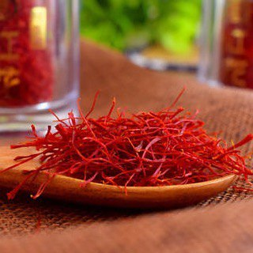

زعفران یک محصول کشاورزی است که بخاطر عطر و رنگش بعنوان چاشنی و ادویه در آشپزی و کار های مختلف استفاده میشود.
این ادویه جزو گرانترین ادویههای جهان است که بعنوان طلای سرخ نیز شناخته می شود.

زعفران در مناطق با آب و هوای خشک و نیمهخشک کشت میشود که دارای تابستانهای گرم و زمستانهای سرد هستند.
این شرایط اقلیمی برای رشد و تولید زعفران بسیار مناسب است.
شهرهایی که زعفران در آنها کشت میشود:
سرایان
تربت حیدریه
قائن
فردوس
زیر کوه
مشهد
حدود 90% از زعفران جهان در ایران تولید میشود.
کشور ما ایران به عنوان بزرگترین تولیدکننده زعفران در دنیا شناخته میشود و
زعفران ایرانی به دلیل کیفیت بالا و عطر و طعم خاصش در بازارهای جهانی بسیار مورد توجه است.
برخی از خواص زعفران عبارتند از:
ضد افسردگی
کاهش درد
تقویت سیستم ایمنی
کاهش چربی خون
تقویت خلق و خو
کاهش وزن
بهبود مشکلات مفصلی
حفظ سلامت پوست
کنترل دیابت
و ...
استفاده در آشپزی:
ادویه: زعفران به عنوان یک ادویه برای طعمدهی و رنگآمیزی غذاها، به ویژه در برنج، خورشتها و دسرها استفاده میشود.
غذاهای سنتی: در بسیاری از غذاهای ایرانی و کشورهای دیگر مانند پلو زعفرانی، زعفران به کار میرود.
استفاده در صنایع غذایی:
رنگدهی: زعفران به عنوان یک رنگدهنده طبیعی در صنایع غذایی استفاده میشود.
عطر و طعمدهی: از زعفران در تولید برخی نوشیدنیها و دسرها برای ایجاد عطر و طعم خاص بهره میبرند.
استفاده در پزشکی و داروسازی:
خواص درمانی: زعفران دارای خواص ضد التهاب و آنتیاکسیدانی است و ممکن است در درمان برخی بیماریها مانند افسردگی و اضطراب مؤثر باشد.
بهبود خواب: برخی مطالعات نشان میدهند که زعفران میتواند به بهبود کیفیت خواب کمک کند.
استفاده در صنایع عطرسازی:
عطر و ادکلن: زعفران به عنوان یک عنصر عطر در عطرها و ادکلنها استفاده میشود و به آنها عطر خاص و لوکسی میبخشد.
استفاده در صنعت داروسازی:
تقویت سیستم ایمنی: زعفران میتواند به تقویت سیستم ایمنی بدن کمک کند و در برخی از داروها به عنوان یک ترکیب مؤثر مورد استفاده قرار گیرد.
قیمت زعفران به طور حدودی به ازای هر گرم به صورت زیر تخمین زده میشود:
ایران: معمولاً بین ۲ تا ۲۰ دلار برای هر گرم.
آمریکا: بین ۱۵ تا ۵۰ دلار برای هر گرم.
چین: حدود ۱۵ تا ۴۰ دلار برای هر گرم.
ژاپن: معمولاً بین ۳۰ تا ۶۰ دلار برای هر گرم.
کشورهای اروپایی: بین ۲۰ تا ۴۵ دلار برای هر گرم.
این قیمتها میتواند بسته به کیفیت زعفران، نوع آن و شرایط بازار متفاوت باشد.
زعفران گران ترین ادویه جهان است که تا به حال شناخته شده و مورد استفاده قرار گرفته است.
گرانی زعفران دلایل مختلفی مانند دشوار بودن فرایند برداشت دارد.
بسیاری از گیاهان و یا صیفیجات در طول سال،فصل برداشت طولانی دارند.
اما گیاهی مانند زعفران در طول سال دو هفته الی بیست روز زمان برداشت دارد که یکی از دلایل گرانی زعفران مدت زمان کوتاه محصول دهی آن است.

گل زعفران از چند بخش تشکیل شده است که شامل : گلبرگ، کلاله، پرچم، برگ و پیاز میباشد
در تصویر زیر بخش های مختلف زعفران را مشاهده می کنید.